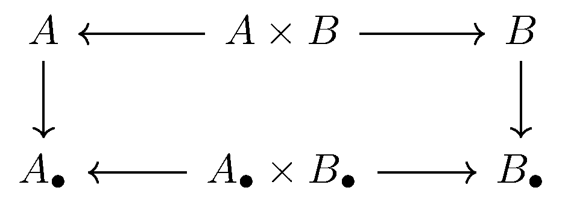
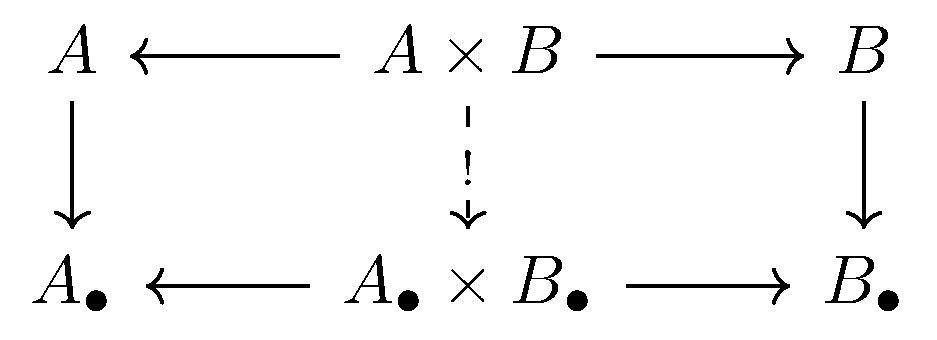
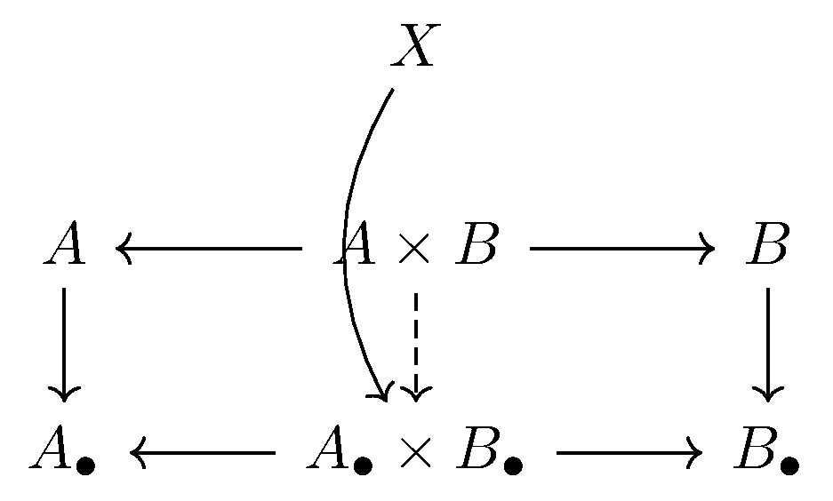
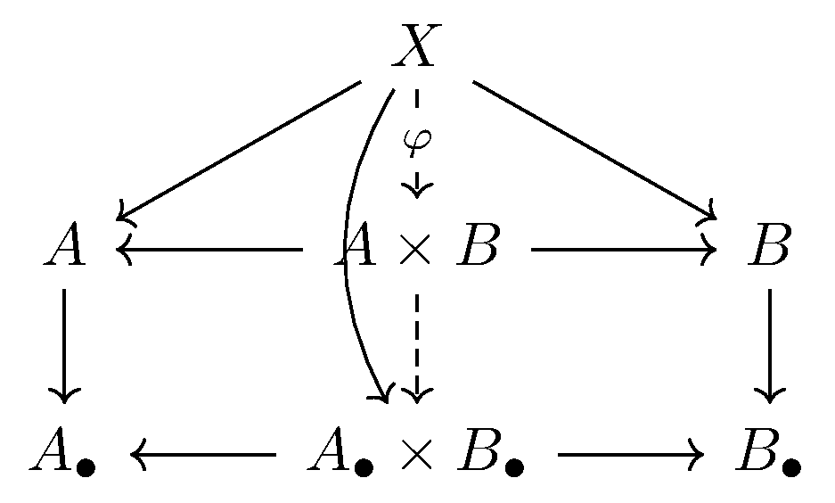

December 2nd
Today I learned that products commute with limits, categorically speaking. This is a special case of the fact that limits commute with limits in general, but whatever. To be precise, suppose that $A_\bullet$ and $B_\bullet$ are diagrams indexed by the category $\mathcal I.$ Assuming that all of the following objects exist, we claim that\[\varprojlim_{\bullet\in\mathcal I}(A_\bullet\times B_\bullet)\cong\varprojlim_{\bullet\in\mathcal I}A_\bullet\times\varprojlim_{\bullet\in\mathcal I}B_\bullet.\]For convenience we let $A=\varprojlim A_\bullet$ and $B=\varprojlim B_\bullet.$ To show the above isomorphism, we show that $A\times B$ satisfies the universal property of $\varprojlim(A_\bullet\times B_\bullet).$ Quickly, definitions of limits and products induce contains the following diagram.
Our maps $A\times B\to A\to A_\bullet$ and $A\times B\to B\to B_\bullet$ force the existence of a unique morphism $A\times B\to A_\bullet\times B_\bullet$ commuting. So we are interested in the following diagram.
To show that our $A\times B$ with the induced morphisms to $A_\bullet\times B_\bullet$ is $\varprojlim(A_\bullet\times B_\bullet),$ we show it satisfies its universal property, as alluded. So fix some $X$ with maps to each $A_\bullet\times B_\bullet$ commuting with the diagram indexed by $\mathcal I.$ Here's our diagram.
Very quickly, we can compose $X\to A_\bullet\times B_\bullet\to A_\bullet$ and $B_\bullet,$ so there exists a unique $X\to A$ commuting with the $X\to A_\bullet$ maps and a unique $X\to B$ commuting with the $X\to B_\bullet$ maps. But having maps $X\to A$ and $X\to B$ gives us a unique map $\varphi:X\to A\times B$ commuting with these maps. So we have the following commutative diagram.
We want to show that the two dashed arrows commute, and the top arrow is unique in commuting. Namely, we need to show the $X\to A_\bullet\times B_\bullet$ is equal to $X\to A\times B\to A_\bullet\times B_\bullet,$ and the given map $X\to A\times B$ is the only one which will give this equality.
To show that the equality does hold, note that there is exactly one map $X\to A_\bullet\times B_\bullet$ which commutes with the $X\to A_\bullet$ and $X\to B_\bullet$ maps. By definition of the limit, these are equal to our mappings $X\to A\to A_\bullet$ and $X\to B\to B_\bullet.$ However, $A\times B\to A_\bullet\times B_\bullet$ is defined as the map which commutes with $A\times B\to A\to A_\bullet$ and similar for $B.$ It follows\[X\to A_\bullet=X\to A\to A_\bullet=X\to A\times B\to A\to A_\bullet=X\to A\times B\to A_\bullet\times B_\bullet\to A_\bullet\]and similar for $B.$ It follows that the map $X\to A\times B\to A_\bullet\times B_\bullet$ commutes with the $X\to A_\bullet$ and $X\to B_\bullet$ maps, so we must have $X\to A\times B\to A_\bullet\times B_\bullet=X\to A_\bullet\times B_\bullet.$
It remains to show uniqueness. Suppose that we have a mapping $X\to A\times B$ such that we always have $X\to A\times B\to A_\bullet\times B_\bullet=X\to A_\bullet\times B_\bullet.$ We claim that this map is the constructed one, $\varphi.$ Our key property of $A\times B\to A_\bullet\times B_\bullet$ is that it makes the diagram commute, which implies that\[X\to A\times B\to A\to A_\bullet=X\to A\times B\to A_\bullet\times B_\bullet\to A_\bullet.\]It follows that $X\to A\times B\to A\to A_\bullet$ commutes with the normal $X\to A_\bullet$ maps, and we've factored the map through $A,$ so properties of limits implies that $X\to A\times B\to A$ is the unique map commuting like this. The same holds for $B.$ Now our constructed map $\varphi$ was defined to be the unique map commuting with $X\to A$ and $X\to B.$ However, we know that\[X\to A\times B\to A=X\to A\]and same for $B$ already, so the uniqueness of $\varphi$ here forces the map $X\to A\times B$ to equal $\varphi.$ This completes the proof.